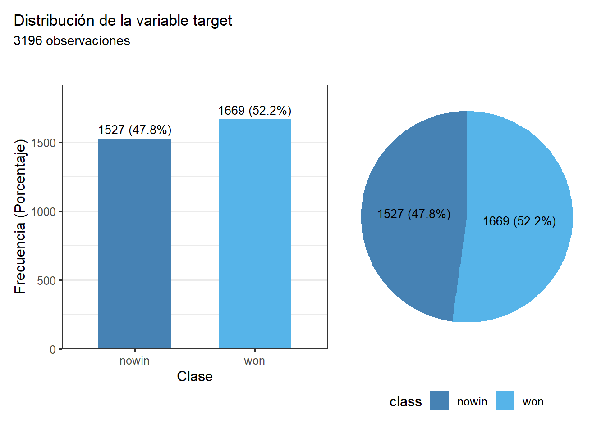
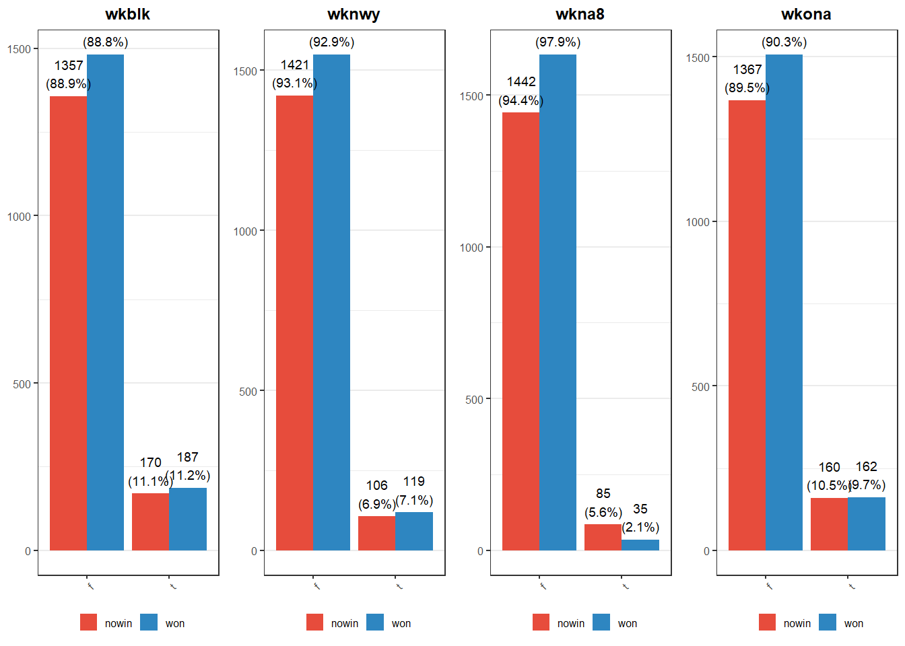

Chapter 3 Librerías
#install.packages("tidyverse")
#install.packages("GGally")
#install.packages("gridExtra")
#install.packages("patchwork")
#install.packages("viridis")
#install.packages("tidytext")
#install.packages("Amelia")
#install.packages("vcd")
library(tidyverse)## Warning: package 'tidyverse' was built under R version 4.5.3## Warning: package 'ggplot2' was built under R version 4.5.3## Warning: package 'tibble' was built under R version 4.5.3## Warning: package 'tidyr' was built under R version 4.5.3## Warning: package 'readr' was built under R version 4.5.3## Warning: package 'purrr' was built under R version 4.5.3## Warning: package 'dplyr' was built under R version 4.5.3## Warning: package 'stringr' was built under R version 4.5.3## Warning: package 'forcats' was built under R version 4.5.3## Warning: package 'lubridate' was built under R version 4.5.3## ── Attaching core tidyverse packages ──────────────────────── tidyverse 2.0.0 ──
## ✔ dplyr 1.2.1 ✔ readr 2.2.0
## ✔ forcats 1.0.1 ✔ stringr 1.6.0
## ✔ ggplot2 4.0.3 ✔ tibble 3.3.1
## ✔ lubridate 1.9.5 ✔ tidyr 1.3.2
## ✔ purrr 1.2.2
## ── Conflicts ────────────────────────────────────────── tidyverse_conflicts() ──
## ✖ dplyr::filter() masks stats::filter()
## ✖ dplyr::lag() masks stats::lag()
## ℹ Use the conflicted package (<http://conflicted.r-lib.org/>) to force all conflicts to become errors## Warning: package 'GGally' was built under R version 4.5.3## Warning: package 'gridExtra' was built under R version 4.5.3##
## Adjuntando el paquete: 'gridExtra'
##
## The following object is masked from 'package:dplyr':
##
## combine## Warning: package 'patchwork' was built under R version 4.5.3## Warning: package 'viridis' was built under R version 4.5.3## Cargando paquete requerido: viridisLite## Warning: package 'viridisLite' was built under R version 4.5.3## Warning: package 'tidytext' was built under R version 4.5.3## Cargando paquete requerido: Rcpp## Warning: package 'Rcpp' was built under R version 4.5.3## ##
## ## Amelia II: Multiple Imputation
## ## (Version 1.8.3, built: 2024-11-07)
## ## Copyright (C) 2005-2026 James Honaker, Gary King and Matthew Blackwell
## ## Refer to http://gking.harvard.edu/amelia/ for more information
## #### Warning: package 'reshape2' was built under R version 4.5.3##
## Adjuntando el paquete: 'reshape2'
##
## The following object is masked from 'package:tidyr':
##
## smiths## Warning: package 'vcd' was built under R version 4.5.3## Cargando paquete requerido: gridSe hace la carga de los datos:
Asignamos nombres de columnas según el archivo .names:
nombres <- c("bkblk","bknwy","bkon8","bkona","bkspr","bkxbq","bkxcr","bkxwp",
"blxwp","bxqsq","cntxt","dsopp","dwipd","hdchk","katri","mulch",
"qxmsq","r2ar8","reskd","reskr","rimmx","rkxwp","rxmsq","simpl",
"skach","skewr","skrxp","spcop","stlmt","thrsk","wkcti","wkna8",
"wknck","wkovl","wkpos","wtoeg","class")
colnames(datos) <- nombres
colnames(datos)## [1] "bkblk" "bknwy" "bkon8" "bkona" "bkspr" "bkxbq" "bkxcr" "bkxwp" "blxwp"
## [10] "bxqsq" "cntxt" "dsopp" "dwipd" "hdchk" "katri" "mulch" "qxmsq" "r2ar8"
## [19] "reskd" "reskr" "rimmx" "rkxwp" "rxmsq" "simpl" "skach" "skewr" "skrxp"
## [28] "spcop" "stlmt" "thrsk" "wkcti" "wkna8" "wknck" "wkovl" "wkpos" "wtoeg"
## [37] "class"Realizamos una inspección inicial de los datos:
## [1] 3196 37## 'data.frame': 3196 obs. of 37 variables:
## $ bkblk: chr "f" "f" "f" "f" ...
## $ bknwy: chr "f" "f" "f" "f" ...
## $ bkon8: chr "f" "f" "f" "f" ...
## $ bkona: chr "f" "f" "f" "f" ...
## $ bkspr: chr "f" "t" "t" "f" ...
## $ bkxbq: chr "f" "f" "f" "f" ...
## $ bkxcr: chr "f" "f" "t" "f" ...
## $ bkxwp: chr "f" "f" "f" "f" ...
## $ blxwp: chr "f" "f" "f" "t" ...
## $ bxqsq: chr "f" "f" "f" "f" ...
## $ cntxt: chr "f" "f" "f" "f" ...
## $ dsopp: chr "f" "f" "f" "f" ...
## $ dwipd: chr "l" "l" "l" "l" ...
## $ hdchk: chr "f" "f" "f" "f" ...
## $ katri: chr "n" "n" "n" "n" ...
## $ mulch: chr "f" "f" "f" "f" ...
## $ qxmsq: chr "f" "f" "f" "f" ...
## $ r2ar8: chr "t" "t" "t" "t" ...
## $ reskd: chr "f" "f" "f" "f" ...
## $ reskr: chr "f" "f" "f" "f" ...
## $ rimmx: chr "f" "f" "f" "f" ...
## $ rkxwp: chr "f" "f" "f" "t" ...
## $ rxmsq: chr "f" "f" "f" "f" ...
## $ simpl: chr "f" "f" "f" "f" ...
## $ skach: chr "f" "f" "f" "f" ...
## $ skewr: chr "t" "t" "t" "t" ...
## $ skrxp: chr "f" "f" "f" "f" ...
## $ spcop: chr "f" "f" "f" "f" ...
## $ stlmt: chr "f" "f" "f" "f" ...
## $ thrsk: chr "f" "f" "f" "f" ...
## $ wkcti: chr "f" "f" "f" "f" ...
## $ wkna8: chr "f" "f" "f" "f" ...
## $ wknck: chr "f" "f" "f" "f" ...
## $ wkovl: chr "t" "t" "t" "t" ...
## $ wkpos: chr "t" "t" "t" "t" ...
## $ wtoeg: chr "n" "n" "n" "n" ...
## $ class: chr "won" "won" "won" "won" ...## bkblk bknwy bkon8 bkona
## Length:3196 Length:3196 Length:3196 Length:3196
## Class :character Class :character Class :character Class :character
## Mode :character Mode :character Mode :character Mode :character
## bkspr bkxbq bkxcr bkxwp
## Length:3196 Length:3196 Length:3196 Length:3196
## Class :character Class :character Class :character Class :character
## Mode :character Mode :character Mode :character Mode :character
## blxwp bxqsq cntxt dsopp
## Length:3196 Length:3196 Length:3196 Length:3196
## Class :character Class :character Class :character Class :character
## Mode :character Mode :character Mode :character Mode :character
## dwipd hdchk katri mulch
## Length:3196 Length:3196 Length:3196 Length:3196
## Class :character Class :character Class :character Class :character
## Mode :character Mode :character Mode :character Mode :character
## qxmsq r2ar8 reskd reskr
## Length:3196 Length:3196 Length:3196 Length:3196
## Class :character Class :character Class :character Class :character
## Mode :character Mode :character Mode :character Mode :character
## rimmx rkxwp rxmsq simpl
## Length:3196 Length:3196 Length:3196 Length:3196
## Class :character Class :character Class :character Class :character
## Mode :character Mode :character Mode :character Mode :character
## skach skewr skrxp spcop
## Length:3196 Length:3196 Length:3196 Length:3196
## Class :character Class :character Class :character Class :character
## Mode :character Mode :character Mode :character Mode :character
## stlmt thrsk wkcti wkna8
## Length:3196 Length:3196 Length:3196 Length:3196
## Class :character Class :character Class :character Class :character
## Mode :character Mode :character Mode :character Mode :character
## wknck wkovl wkpos wtoeg
## Length:3196 Length:3196 Length:3196 Length:3196
## Class :character Class :character Class :character Class :character
## Mode :character Mode :character Mode :character Mode :character
## class
## Length:3196
## Class :character
## Mode :characterVerificamos que no hayan datos faltantes o casillas vacías (NAs):
## bkblk bknwy bkon8 bkona bkspr bkxbq bkxcr bkxwp blxwp bxqsq cntxt dsopp dwipd
## 0 0 0 0 0 0 0 0 0 0 0 0 0
## hdchk katri mulch qxmsq r2ar8 reskd reskr rimmx rkxwp rxmsq simpl skach skewr
## 0 0 0 0 0 0 0 0 0 0 0 0 0
## skrxp spcop stlmt thrsk wkcti wkna8 wknck wkovl wkpos wtoeg class
## 0 0 0 0 0 0 0 0 0 0 0
No tenemos NAs
Las variables de este dataset son categóricas (representan características del tablero con valores como t, f, n, b, g). Para que R las interprete correctamente como categorías y no como texto plano, las convertimos a factores.
## 'data.frame': 3196 obs. of 37 variables:
## $ bkblk: Factor w/ 2 levels "f","t": 1 1 1 1 1 1 1 1 1 1 ...
## $ bknwy: Factor w/ 2 levels "f","t": 1 1 1 1 1 1 1 1 1 1 ...
## $ bkon8: Factor w/ 2 levels "f","t": 1 1 1 1 1 1 1 1 1 1 ...
## $ bkona: Factor w/ 2 levels "f","t": 1 1 1 1 1 1 1 1 1 1 ...
## $ bkspr: Factor w/ 2 levels "f","t": 1 2 2 1 1 1 1 2 1 1 ...
## $ bkxbq: Factor w/ 2 levels "f","t": 1 1 1 1 1 1 1 1 1 1 ...
## $ bkxcr: Factor w/ 2 levels "f","t": 1 1 2 1 1 1 1 1 1 2 ...
## $ bkxwp: Factor w/ 2 levels "f","t": 1 1 1 1 1 1 1 1 1 1 ...
## $ blxwp: Factor w/ 2 levels "f","t": 1 1 1 2 1 1 2 1 1 1 ...
## $ bxqsq: Factor w/ 2 levels "f","t": 1 1 1 1 1 1 1 1 1 1 ...
## $ cntxt: Factor w/ 2 levels "f","t": 1 1 1 1 1 1 1 2 2 2 ...
## $ dsopp: Factor w/ 2 levels "f","t": 1 1 1 1 1 1 1 1 1 1 ...
## $ dwipd: Factor w/ 2 levels "g","l": 2 2 2 2 2 2 2 2 2 2 ...
## $ hdchk: Factor w/ 2 levels "f","t": 1 1 1 1 1 1 1 1 1 1 ...
## $ katri: Factor w/ 3 levels "b","n","w": 2 2 2 2 2 2 2 2 2 2 ...
## $ mulch: Factor w/ 2 levels "f","t": 1 1 1 1 1 1 1 1 1 1 ...
## $ qxmsq: Factor w/ 2 levels "f","t": 1 1 1 1 1 1 1 1 1 1 ...
## $ r2ar8: Factor w/ 2 levels "f","t": 2 2 2 2 2 2 2 2 2 2 ...
## $ reskd: Factor w/ 2 levels "f","t": 1 1 1 1 1 1 1 1 1 1 ...
## $ reskr: Factor w/ 2 levels "f","t": 1 1 1 1 1 1 1 1 1 1 ...
## $ rimmx: Factor w/ 2 levels "f","t": 1 1 1 1 1 1 1 1 1 1 ...
## $ rkxwp: Factor w/ 2 levels "f","t": 1 1 1 2 1 1 2 1 1 1 ...
## $ rxmsq: Factor w/ 2 levels "f","t": 1 1 1 1 1 1 1 1 1 1 ...
## $ simpl: Factor w/ 2 levels "f","t": 1 1 1 1 2 2 2 1 1 1 ...
## $ skach: Factor w/ 2 levels "f","t": 1 1 1 1 1 1 1 1 1 1 ...
## $ skewr: Factor w/ 2 levels "f","t": 2 2 2 2 2 2 2 2 2 2 ...
## $ skrxp: Factor w/ 2 levels "f","t": 1 1 1 1 1 1 1 1 1 1 ...
## $ spcop: Factor w/ 2 levels "f","t": 1 1 1 1 1 1 1 1 1 1 ...
## $ stlmt: Factor w/ 2 levels "f","t": 1 1 1 1 1 1 1 1 1 1 ...
## $ thrsk: Factor w/ 2 levels "f","t": 1 1 1 1 1 2 1 1 1 1 ...
## $ wkcti: Factor w/ 2 levels "f","t": 1 1 1 1 1 1 1 1 2 1 ...
## $ wkna8: Factor w/ 2 levels "f","t": 1 1 1 1 1 1 1 1 1 1 ...
## $ wknck: Factor w/ 2 levels "f","t": 1 1 1 1 1 1 1 1 1 1 ...
## $ wkovl: Factor w/ 2 levels "f","t": 2 2 2 2 2 2 2 2 2 2 ...
## $ wkpos: Factor w/ 2 levels "f","t": 2 2 2 2 2 2 2 2 2 2 ...
## $ wtoeg: Factor w/ 2 levels "n","t": 1 1 1 1 1 1 1 1 1 1 ...
## $ class: Factor w/ 2 levels "nowin","won": 2 2 2 2 2 2 2 2 2 2 ...3.1 Análisis de la variable target “class”
Tabla de frecuencias:
tabla_target <- datos %>%
count(class, name = "Frecuencia") %>%
mutate(
Porcentaje = round((Frecuencia / sum(Frecuencia)) * 100, 1),
Etiqueta = paste0(Frecuencia, " (", Porcentaje, "%)")
)
print(tabla_target)## class Frecuencia Porcentaje Etiqueta
## 1 nowin 1527 47.8 1527 (47.8%)
## 2 won 1669 52.2 1669 (52.2%)Gráfico de barras:
g_target <- ggplot(tabla_target, aes(x = class, y = Frecuencia, fill = class)) +
geom_col(width = 0.6) +
geom_text(aes(label = Etiqueta), vjust = -0.5, size = 3.5) +
scale_fill_manual(values = c("steelblue", "#56B4E9")) +
scale_y_continuous(expand = expansion(mult = c(0, 0.15))) +
labs(
x = "Clase",
y = "Frecuencia (Porcentaje)"
) +
theme_bw(base_size = 12) +
theme(
legend.position = "none",
panel.grid.major.x = element_blank()
)Gráfico de torta para visualizar mejor la proporción:
g_torta <- tabla_target %>%
ggplot(aes(x = "", y = Frecuencia, fill = class)) +
geom_col(width = 1) +
coord_polar(theta = "y") +
geom_text(aes(label = Etiqueta), position = position_stack(vjust = 0.5), size = 3.5) +
scale_fill_manual(values = c("steelblue", "#56B4E9")) +
labs(
title = "",
x = NULL,
y = NULL
) +
theme_void(base_size = 12) +
theme(legend.position = "bottom")Observemos los dos gráficos:
(g_target | g_torta) +
plot_annotation(
title = "Distribución de la variable target",
subtitle = paste(nrow(datos), "observaciones")
)
La diferencia entre ambas clases es de solo 4.4 puntos porcentuales, lo que indica que el dataset no tiene un sesgo significativo hacia ninguna clase, esto significa que en aproximadamente la mitad de las posiciones del final Rey+Torre vs Rey+Peón en a7, las blancas tienen una estrategia ganadora, mientras que en la otra mitad el peón negro logra coronar o las negras consiguen tablas.
3.2 Análisis de las variables independientes
Número de niveles por variable:
frecuencias <- datos %>%
select(-class) %>%
pivot_longer(everything(),
names_to = "variable",
values_to = "valor") %>%
count(variable, valor) %>%
group_by(variable) %>%
mutate(
porcentaje = 100 * n / sum(n)
)tabla_resumen <- frecuencias %>%
group_by(variable) %>%
summarise(
niveles = paste(valor, collapse = " / "),
n_niveles = n(),
max_porc = max(porcentaje),
min_porc = min(porcentaje),
balance = round(100 - (max_porc - min_porc), 1),
utilidad = case_when(
balance > 70 ~ "✅ Buena",
balance > 30 ~ "⚠️ Media",
TRUE ~ "❌ Mala"
)
) %>%
arrange(desc(balance))
tabla_resumen## # A tibble: 36 × 7
## variable niveles n_niveles max_porc min_porc balance utilidad
## <chr> <chr> <int> <dbl> <dbl> <dbl> <chr>
## 1 bkxbq f / t 2 53.9 46.1 92.2 ✅ Buena
## 2 cntxt f / t 2 56.9 43.1 86.3 ✅ Buena
## 3 simpl f / t 2 61.8 38.2 76.4 ✅ Buena
## 4 blxwp f / t 2 62.0 38.0 76.1 ✅ Buena
## 5 wknck f / t 2 62.1 37.9 75.8 ✅ Buena
## 6 wkovl f / t 2 62.8 37.2 74.4 ✅ Buena
## 7 bkxcr f / t 2 63.4 36.6 73.2 ✅ Buena
## 8 bkspr f / t 2 66.6 33.4 66.8 ⚠️ Media
## 9 r2ar8 f / t 2 68.7 31.3 62.6 ⚠️ Media
## 10 dwipd g / l 2 69.0 31.0 62 ⚠️ Media
## # ℹ 26 more rowsVariables con 2 niveles:
binarias <- frecuencias %>%
group_by(variable) %>%
filter(n() == 2) %>%
ungroup() %>%
select(variable, valor, porcentaje) %>%
pivot_wider(names_from = valor, values_from = porcentaje, values_fill = 0)
print("Variables binarias (2 niveles):")## [1] "Variables binarias (2 niveles):"## # A tibble: 35 × 6
## variable f t g l n
## <chr> <dbl> <dbl> <dbl> <dbl> <dbl>
## 1 bkblk 88.8 11.2 0 0 0
## 2 bknwy 93.0 7.04 0 0 0
## 3 bkon8 96.2 3.75 0 0 0
## 4 bkona 89.9 10.1 0 0 0
## 5 bkspr 66.6 33.4 0 0 0
## 6 bkxbq 53.9 46.1 0 0 0
## 7 bkxcr 63.4 36.6 0 0 0
## 8 bkxwp 78.2 21.8 0 0 0
## 9 blxwp 62.0 38.0 0 0 0
## 10 bxqsq 69.6 30.4 0 0 0
## # ℹ 25 more rowsVariables con 3 niveles:
ternarias <- frecuencias %>%
group_by(variable) %>%
filter(n() == 3) %>%
ungroup() %>%
select(variable, valor, porcentaje) %>%
pivot_wider(names_from = valor, values_from = porcentaje, values_fill = 0)
print("Variables ternarias (3 niveles):")## [1] "Variables ternarias (3 niveles):"## # A tibble: 1 × 4
## variable b n w
## <chr> <dbl> <dbl> <dbl>
## 1 katri 7.01 79.0 14.0Variables que se pueden descartar:
## [1] "variables a descartar:"## # A tibble: 13 × 7
## variable niveles n_niveles max_porc min_porc balance utilidad
## <chr> <chr> <int> <dbl> <dbl> <dbl> <chr>
## 1 bknwy f / t 2 93.0 7.04 14.1 ❌ Mala
## 2 rxmsq f / t 2 94.3 5.73 11.5 ❌ Mala
## 3 skrxp f / t 2 94.5 5.48 11 ❌ Mala
## 4 wkna8 f / t 2 94.5 5.48 11 ❌ Mala
## 5 mulch f / t 2 95.1 4.88 9.8 ❌ Mala
## 6 thrsk f / t 2 95.7 4.26 8.5 ❌ Mala
## 7 bkon8 f / t 2 96.2 3.75 7.5 ❌ Mala
## 8 qxmsq f / t 2 97.0 3.04 6.1 ❌ Mala
## 9 stlmt f / t 2 98.5 1.47 2.9 ❌ Mala
## 10 reskd f / t 2 99.2 0.814 1.6 ❌ Mala
## 11 hdchk f / t 2 99.5 0.469 0.9 ❌ Mala
## 12 skach f / t 2 99.7 0.344 0.7 ❌ Mala
## 13 spcop f / t 2 100.0 0.0313 0.1 ❌ MalaVariables útiles:
variables_utiles <- tabla_resumen %>%
filter(balance >= 20) %>%
pull(variable)
df <- datos %>%
select(all_of(c(variables_utiles, "class")))
write.csv(df, "df.csv", row.names = FALSE)Veamos la estructura de nuestro dataset reducido:
## 'data.frame': 3196 obs. of 24 variables:
## $ bkxbq: Factor w/ 2 levels "f","t": 1 1 1 1 1 1 1 1 1 1 ...
## $ cntxt: Factor w/ 2 levels "f","t": 1 1 1 1 1 1 1 2 2 2 ...
## $ simpl: Factor w/ 2 levels "f","t": 1 1 1 1 2 2 2 1 1 1 ...
## $ blxwp: Factor w/ 2 levels "f","t": 1 1 1 2 1 1 2 1 1 1 ...
## $ wknck: Factor w/ 2 levels "f","t": 1 1 1 1 1 1 1 1 1 1 ...
## $ wkovl: Factor w/ 2 levels "f","t": 2 2 2 2 2 2 2 2 2 2 ...
## $ bkxcr: Factor w/ 2 levels "f","t": 1 1 2 1 1 1 1 1 1 2 ...
## $ bkspr: Factor w/ 2 levels "f","t": 1 2 2 1 1 1 1 2 1 1 ...
## $ r2ar8: Factor w/ 2 levels "f","t": 2 2 2 2 2 2 2 2 2 2 ...
## $ dwipd: Factor w/ 2 levels "g","l": 2 2 2 2 2 2 2 2 2 2 ...
## $ skewr: Factor w/ 2 levels "f","t": 2 2 2 2 2 2 2 2 2 2 ...
## $ bxqsq: Factor w/ 2 levels "f","t": 1 1 1 1 1 1 1 1 1 1 ...
## $ wkpos: Factor w/ 2 levels "f","t": 2 2 2 2 2 2 2 2 2 2 ...
## $ wtoeg: Factor w/ 2 levels "n","t": 1 1 1 1 1 1 1 1 1 1 ...
## $ bkxwp: Factor w/ 2 levels "f","t": 1 1 1 1 1 1 1 1 1 1 ...
## $ rkxwp: Factor w/ 2 levels "f","t": 1 1 1 2 1 1 2 1 1 1 ...
## $ rimmx: Factor w/ 2 levels "f","t": 1 1 1 1 1 1 1 1 1 1 ...
## $ wkcti: Factor w/ 2 levels "f","t": 1 1 1 1 1 1 1 1 2 1 ...
## $ reskr: Factor w/ 2 levels "f","t": 1 1 1 1 1 1 1 1 1 1 ...
## $ katri: Factor w/ 3 levels "b","n","w": 2 2 2 2 2 2 2 2 2 2 ...
## $ bkblk: Factor w/ 2 levels "f","t": 1 1 1 1 1 1 1 1 1 1 ...
## $ dsopp: Factor w/ 2 levels "f","t": 1 1 1 1 1 1 1 1 1 1 ...
## $ bkona: Factor w/ 2 levels "f","t": 1 1 1 1 1 1 1 1 1 1 ...
## $ class: Factor w/ 2 levels "nowin","won": 2 2 2 2 2 2 2 2 2 2 ...## [1] 3196 24kdcjndhdihovñhvjf
Vamos a usar vcd dkeñfkrnoñrnjgrlkg,
Calculemos la matriz de asociación (Cramer´s V):
cramer_v <- function(x, y) {
tbl <- table(x, y)
chi2 <- chisq.test(tbl, simulate.p.value = TRUE)$statistic
n <- sum(tbl)
r <- min(nrow(tbl), ncol(tbl))
sqrt(as.numeric(chi2) / (n * (r - 1)))
}
# Calcular para variables útiles
vars_utiles <- colnames(df)
cramer_matrix <- matrix(0,
nrow = length(vars_utiles),
ncol = length(vars_utiles))
rownames(cramer_matrix) <- vars_utiles
colnames(cramer_matrix) <- vars_utiles
for (i in 1:length(vars_utiles)) {
for (j in 1:length(vars_utiles)) {
cramer_matrix[i, j] <- cramer_v(df[[vars_utiles[i]]],
df[[vars_utiles[j]]])
}
}
# Visualizar como heatmap
cramer_matrix %>%
as.data.frame() %>%
rownames_to_column("var1") %>%
pivot_longer(-var1, names_to = "var2", values_to = "cramer") %>%
ggplot(aes(x = var1, y = var2, fill = cramer)) +
geom_tile() +
geom_text(aes(label = round(cramer, 2)), size = 2.3) +
scale_fill_gradient(low = "white", high = "steelblue", limits = c(0, 1)) +
labs(title = "Asociación entre variables útiles (Cramér's V)",
x = "", y = "", fill = "Cramer's V") +
theme_bw(base_size = 9) +
theme(axis.text.x = element_text(angle = 45, hjust = 1, size = 7),
axis.text.y = element_text(size = 7))
fw.lvhjfvliufhlvhvf
Extraemos asociación con class:
asociacion_class <- cramer_matrix["class", ] %>%
as.data.frame() %>%
rownames_to_column("variable") %>%
rename(cramer = ".") %>%
filter(variable != "class") %>%
arrange(desc(cramer))
print("Top 3 variables más asociadas con el resultado:")## [1] "Top 3 variables más asociadas con el resultado:"## variable cramer
## 1 rimmx 0.4522840
## 2 bxqsq 0.3801012
## 3 wknck 0.3652651asociacion_class %>%
head(3) %>%
ggplot(aes(x = reorder(variable, cramer), y = cramer, fill = cramer)) +
geom_col(width = 0.6) +
coord_flip() +
scale_fill_gradient(low = "lightblue", high = "darkblue") +
geom_text(aes(label = round(cramer, 3)), hjust = -0.2, size = 3) +
labs(
title = "Top 3 factores clave para determinar 'won' o 'nowin'",
subtitle = "Variables con mayor asociación con el resultado",
x = "Variable",
y = "Cramer's V"
) +
theme_bw(base_size = 13) +
theme(legend.position = "none")